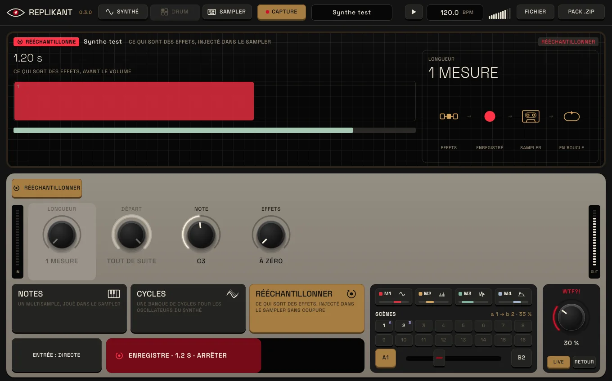
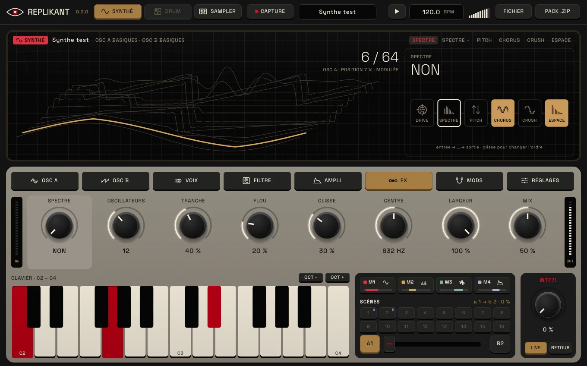
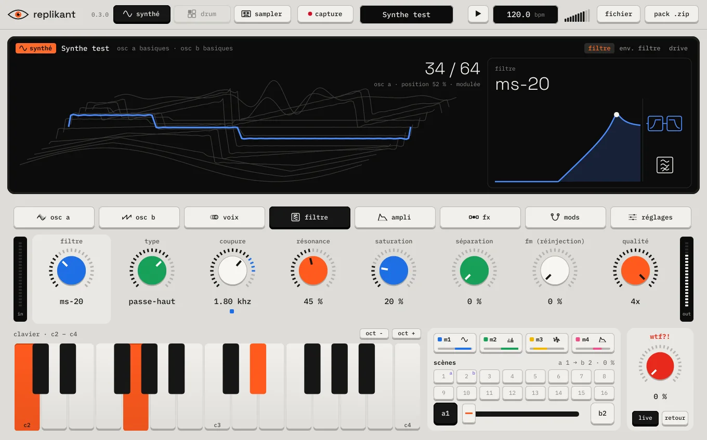

REPLIKANT.
synthé · sampler · autosampleur
Il capture tes synthés : leurs notes, leurs cycles, ou ce qui sort de tes effets. Puis il en fait des instruments, un synthé à cycles et un sampler, à passer dans des filtres analogiques, des effets, des mods et des scènes.
- v@VERSION@
- macOS 11+
- Apple Silicon & Intel
- AU · VST3 · appli
- gratuit · GPL-3

00 · Ce qu'il fait
Synthé
Deux oscillateurs qui lisent des cycles (64 basiques, ou ceux de ton synthé), un sub, du bruit, l'unisson, la PM de B vers A. Il joue dès l'ouverture.
Sampler
Glisse un son sur la fenêtre et joue-le, comme sur l'Assimil8or : lecture élastique, boucle et son fondu, aliasing, bits.
Capture des notes
L'autosampleur : chaque note jouée au synthé en MIDI, enregistrée, bouclée, accordée, et les touches qui manquent calculées.
Capture des cycles
Une note tenue pendant qu'un CC, la vélocité ou ta main fait bouger le son : une banque de cycles pour le synthé, et un wavetable.
Rééchantillonner
Ce qui sort des effets, enregistré sur des mesures puis injecté dans le sampler sans coupure, les effets remis à zéro.
Filtres
MOOG, MS-20, SEM, OSCAR, WASP, POLIVOKS, suréchantillonnés, avec leur enveloppe, la réinjection FM et un drive.
Effets
Spectre, pitch, chorus, crush, espace, dans l'ordre que tu veux : tu glisses les blocs, le son ne claque pas.
Mods et scènes
Quatre mods façon IMPAKT, seize scènes et un fader façon Octatrack, WTF?! qui bouscule tout au tempo.
Partage
Un pack zip (l'instrument, ses samples, ses cycles et son son) à glisser vers un pote, qui le glisse sur sa fenêtre.
01 · Installer
- 1Ouvre le DMG. Quitte ton DAW.
- 2Double-clic sur Installer REPLIKANT. « Personnaliser » = juste l'AU, le VST3 ou l'appli.
- 3macOS refuse ? (Il n'aime pas ce qui n'est pas signé chez Apple.) Ouvre le Terminal : ⌘+Espace, tape Terminal, ⏎. Colle :
Puis ton mot de passe : rien ne s'affiche quand tu le tapes, c'est normal.
@INSTALLER_CMD@
- 1Ouvre le DMG. Quitte ton DAW.
- 2Glisse chaque élément sur son dossier : .component → Components, .vst3 → VST3, .app → Applications.
- 3Ouvre le Terminal : ⌘+Espace, tape Terminal, ⏎. Colle :
Mot de passe (invisible, c'est normal). Elle débloque l'AU et le VST3, puis fait valider l'AU.
@TERMINAL_CMD@
Quand le Terminal dit REPLIKANT est prêt., rouvre ton DAW. Live ne le voit pas ? Réglages › Plug-ins › Réanalyser.
Ensuite, les mises à jour se font depuis le plug-in : bouton Mise à jour en haut quand une version sort.
02 · Brancher
Pour capturer, deux câbles : le MIDI de l'ordinateur vers le synthé, et la sortie audio du synthé dans ta carte son. REPLIKANT envoie les notes directement au port MIDI choisi, quel que soit le DAW. Pour jouer le synthé ou un son glissé, rien à brancher.
L'appli (le plus simple)
- Fichier › Réglages audio et MIDI : ta carte, et les entrées où arrive le synthé.
- Capture › Source : Son = entrée, Sortie MIDI = le port du synthé, son canal.
- Tester une note : tu dois entendre un C3 et voir le niveau d'entrée bouger.
Logic
- Une piste d'instrument, slot d'instrument › Effets contrôlés par MIDI › REPLIKANT : le synthé et le sampler se jouent au clavier.
- Pour capturer : REPLIKANT en effet audio sur une piste qui reçoit le synthé (monitoring d'entrée allumé), Sortie MIDI = le port du synthé, puis Lancer la capture.
Bitwig, Reaper, Cubase
- REPLIKANT sur une piste : il joue avec les notes de la piste, et enregistre l'audio qui y arrive.
- Sortie MIDI = le port du synthé (ou DAW si tu routes la sortie MIDI du plug-in vers le synthé).
Ableton Live
- REPLIKANT sur une piste audio (entrée = le synthé, Monitor In) : il capture et sert de multi-effet.
- Live n'envoie pas de notes aux effets audio : pour jouer, l'appli, ou l'export en dossier de WAV dans Sampler.
Pas de synthé sous la main ? Source › synthé test : un petit analogique intégré (son filtre suit le CC 74), pour tout essayer. Pour transposer très bas, mets la carte son à 96 kHz.
03 · Capturer
Bouton Capture en haut, puis ce que tu captures : notes, cycles ou rééchantillonner. Chacun a ses réglages.
- NOTESUn multisample : la plage de notes (tous les N demi-tons, N notes, ou à la main), jusqu'à 16 vélocités et 8 prises, la tenue, la relâche, la pause. REPLIKANT mesure le bruit de fond, joue les notes une à une, coupe chaque attaque, trouve la boucle, mesure la justesse (même avec un sub ou des oscillateurs désaccordés), puis calcule les touches entre les notes sans que le timbre bouge. À la fin, le SAMPLER joue l'instrument.
- CYCDes cycles : une note grave tenue 8, 16, 32 ou 64 fois, pendant qu'un CC balaie un bouton du synthé (le filtre, une forme d'onde…), que la vélocité monte, ou que tu tournes un bouton à la main. Un cycle est pris dans chaque prise, une fois l'attaque passée. La banque va dans l'osc A du SYNTHÉ (CAPTURÉS) : tourne POSITION pour la parcourir. Elle est gardée avec l'instrument, et en wavetable de 2048 points à côté (Serum, Vital, Bitwig la lisent).
- RÉÉRééchantillonner : ce qui sort des effets est enregistré, sur 1, 2, 4 ou 8 mesures (à la mesure suivante quand le transport joue) ou en libre. À la fin, l'enregistrement prend le relais en boucle, sans trou, et devient un instrument du SAMPLER, les effets remis à zéro pour ne pas traiter le son deux fois. Joue une note pour reprendre la main, puis modifie-le, transpose-le, repasse-le dans les effets. Avec entrée : par les effets, c'est une piste de ton DAW que tu captures ainsi.

Une capture de notes en cours : la prise, ce qu'il reste, la forme d'onde qui arrive.

Rééchantillonner : les mesures se remplissent, puis la boucle est injectée dans le sampler.
04 · Transposer
Entre deux notes capturées, les touches sont calculées. Trois algorithmes, page Transpo de la capture :
- HQHQ formants (par défaut) : varispeed avec un sinc de 128 points (pas de repliement, aigus intacts), puis l'enveloppe spectrale de chaque instant remise où elle était. Le filtre du synthé ne monte plus avec la note : c'est ce que fait le synthé lui-même.
- HDClassique HD : le varispeed seul, le son des samplers d'origine en propre.
- TDurée fixe : les attaques et les decays gardent leur durée (pitch-shift spectral), avec la même correction de formants.
Mesuré sur une dent de scie passée dans un filtre résonant fixe : l'écart moyen des harmoniques avec le vrai synthé jouant la note.
| Transposition | Varispeed | HQ formants |
|---|---|---|
| −12 demi-tons | 12,8 dB | 0,8 dB |
| −7 demi-tons | 7,7 dB | 0,5 dB |
| −3 demi-tons | 3,4 dB | 0,2 dB |
| +3 demi-tons | 3,5 dB | 0,4 dB |
| +5 demi-tons | 5,8 dB | 0,6 dB |
| +12 demi-tons | 13,9 dB | 0,2 dB |
05 · Synthé
Le mode par défaut : tu ouvres REPLIKANT, tu joues.
- OSCDeux oscillateurs de cycles : chacun lit une banque (les 64 basiques : sinus, triangle, dent de scie, carré, impulsions, sync, formant ; ou tes cycles capturés) et glisse de l'un à l'autre avec POSITION. Copies limitées en bande toutes les demi-octaves : rien ne se replie, même tout en haut.
- VOIXOctave, accord, fin, niveau ; PM de B vers A, un sub à l'octave, du bruit ; l'unisson jusqu'à 4 voix désaccordées et étalées en stéréo ; POLY, MONO ou LEGATO, la glisse.
- FLTLe même filtre, la même enveloppe, le même drive et les mêmes effets que le sampler.

L'osc A sur une banque capturée au synthé test, son filtre balayé par le CC 74 : huit cycles du plus sombre au plus brillant.
06 · Sampler
L'instrument capturé, ou n'importe quel son : glisse un wav, aiff, flac ou mp3 sur la fenêtre. Il est joué sur tout le clavier, depuis sa note (lue dans le fichier, dans son nom, ou dans sa hauteur).
- LECSample ou élastique : en grains alignés sur le son, la vitesse séparée de la hauteur (figée, ralentie, à l'envers). Transitoires gardés : un kick descendu de deux octaves garde son clic.
- BCLBoucle déplacée et raccourcie, avec un fondu de 0 à 100 % sur ses raccords.
- ALAliasing, d'après l'échelle de l'Assimil8or : de la lecture HQ au filtre d'E-mu, au linéaire, au drop-sample du SP-1200, jusqu'aux alias plus forts que le son. Bits de 32 à 1. Modulation de phase par un sinus sur la note, par le sample lui-même ou par l'entrée.

07 · Filtres et effets
- FLTFiltres modélisés et suréchantillonnés (4X par défaut) : MOOG (l'échelle), MS-20 (ses deux filtres), SEM (variable d'état), OSCAR (deux résonances écartées), WASP (CMOS), POLIVOKS (ampli op qui sature). L'écran dessine sa courbe et un bout de son circuit.
- DRVDrive : préampli, console ou bande (bosse de grave, pleurage).
- FXSpectre (façon Panharmonium), pitch (deux voix, cristaux), chorus, crush, espace (la réverbération de MIFM1, son shimmer). Glisse les blocs sur l'écran pour changer l'ordre : le changement passe par un creux de 10 ms, sans clic.
- INÉcoute par les effets : en insert sur une piste, REPLIKANT devient un multi-effet, et tu peux en rééchantillonner la sortie.

08 · Moduler
- MQuatre mods, comme sur IMPAKT : une onde, des pas (dessinés sur l'écran), du hasard (une boucle de tirages qui revient), une enveloppe lancée par chaque note, ou un suiveur de l'entrée. Au tempo du DAW.
- 1Clique M1 en bas, puis tourne n'importe quel potard : la distance tournée devient la profondeur. Un double-clic retire la route.
- ABScènes, comme sur l'Octatrack : arme une scène, tourne les réglages à y verrouiller ; le fader glisse de A à B, automatisable et modulable.
- WTFWTF?! : les réglages les plus parlants du moteur tirés au sort à chaque croche, en LIVE ou en boucle de huit, puis RETOUR.
- CLKHorloge MIDI vers tes séquenceurs : un port du Mac ou la sortie du plug-in, au tempo choisi ou en suivant le DAW.


Fichier › Couleurs : Noir & or (par défaut) ou Clair.
09 · Exporter, partager
- WAVDossier de WAV : chaque fichier porte sa note, sa justesse, sa boucle (chunk smpl) et sa zone (chunk inst), pour le Sampler de Logic, Ableton, Kontakt, un Elektron, une MPC…
- BWBitwig .multisample : l'instrument complet (zones, vélocités, round robin, boucles).
- ZIPLe pack à partager : Pack .zip en haut réunit l'instrument, ses samples, ses cycles et son son. Glisse-le vers le Finder, AirDrop ou un mail ; chez un pote, il le glisse sur la fenêtre de REPLIKANT.
L'instrument est un dossier dans Musique › REPLIKANT : un fichier .replikant, ses WAV et ses cycles. Le projet de ton DAW s'en souvient.